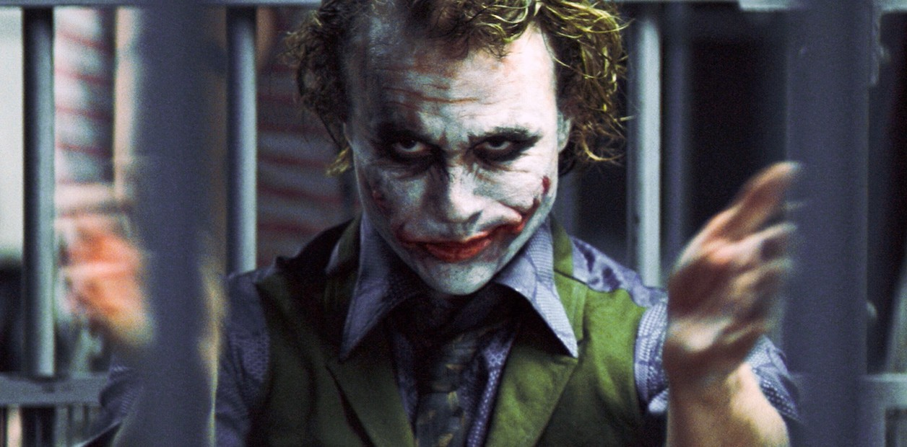
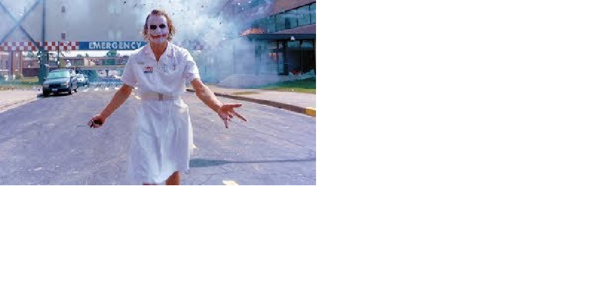

El Joker
es un "agente del caos" anarquista y psicópata que no tiene un origen definitivo en la película, aunque existen varias teorías sobre su pasado, como la de ser un veterano de guerra con habilidades de combate y manipulación.
En una de las escenas clave, el Joker cuenta dos versiones diferentes de cómo obtuvo sus cicatrices en la cara, lo que refuerza la idea de que su pasado es una mentira calculada.


| Características |
| piel blanca como la tiza |
| Cabello tenido verde |
| Sonrisa permanente en el rostro |
| Rostro desfigurado |
| Labios rojos |
- Se combirtio en ladrona para sobrevivir
- Tiene una gran flexibilidad que le permiten realizar maneobras casi imposibles